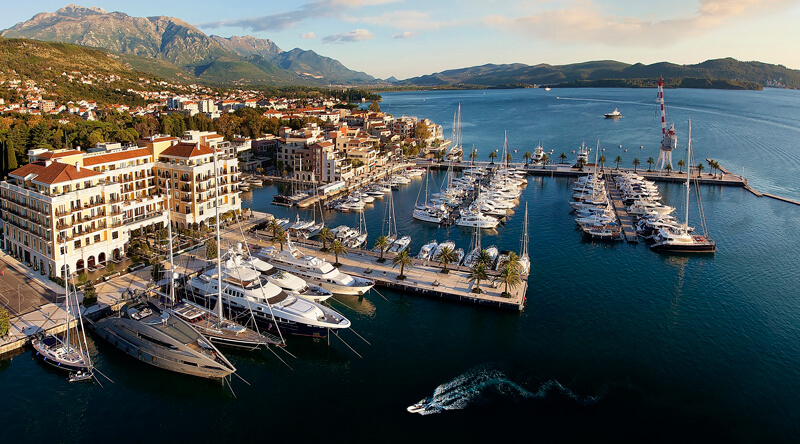

My Travel Blog for 2016
I enjoy travelling and often try to travel to destinations that your average tourist doesn't go to, it gives me the chance to see other people, their cultures and traditions. I love exploring beautiful landscapes and learning about the history of other places. In addition, travelling gets me away from the norm of working life for a while and it often recharges my batteries, this year I have travelled to Montenegro, Turkey and Morocco.
I am planning to squeeze a few more travels in to this year but have not decided on where to go yet
Agadir, Morroco
Agadir, a city along Morocco’s southern Atlantic coast, in the foothills of the Anti-Atlas Mountains, is the capital of Agadir-Ida Ou Tanane province. It’s a resort area known for its golf courses, wide crescent beach and seaside promenade lined in cafes, restaurants and bars. Rebuilt after a devastating 1960 earthquake, it features modern architecture and an easily navigable street grid.
Whilst in Morroco, I travelled to various different cities including Marrakesh, Marrakesh is a former imperial city in western Morocco, it is a major economic center and home to mosques, palaces and gardens. The medina is a densely packed, walled medieval city dating to the Berber Empire with mazelike alleys where thriving souks (marketplaces) sell traditional textiles, pottery and jewelry. Food vendors line Djemaa el-Fna, a broad square where storytellers and musicians perform.
Tivat, Montenegro
Tivat is a coastal town in southwest Montenegro, located in the Bay of Kotor. As of 2011, its population was 14,111. Tivat is the centre of Tivat Municipality, which is the smallest municipality by area in Montenegro.
Lake Skadar is one of the major tourist attractions, the lake is shared with Montenegros' neighbour Albania. In addition to the Lake Montenegro has some beautiful landscapes
Alanya, Turkey
Alanya is a resort town on Turkey’s central Mediterranean coast (aka the Turkish Riviera). Its wide beaches lined with hotels include Cleopatra Beach, where the Egyptian queen reputedly swam. Alanya Castle, a giant Seljuk-era fortress turned open-air museum, stands on a rocky bluff above the beachfront, alongside red-tile-roofed Ottoman villas and the octagonal Red Tower, a symbol of the city dating to 1226.
Near alanya there is a small town call Side, Side is a small resort town on Turkey’s southern Mediterranean coast. An ancient port city, the village today is known for its long beaches and ruins. In the center are the remains of a 2nd-century C.E. theater, which could seat up to 15,000 people. The white marble columns of the Hellenistic Temple of Apollo stand near the harbor
Photo Galary

Porto Montenegro
Contact Details
If you are interested in learning more about my travels, please feel free to contact me..